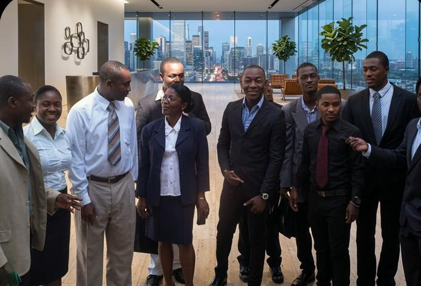

Les grands axes de l'URH, rassembles dans une lecture unique.
Cette page reunit le contexte de creation, les objectifs, la prospection, la FOAD et la levee de fonds dans une presentation continue.
Dossier institutionnel | contexte, objectifs, financement
Cette page reunit le contexte de creation, les objectifs, la prospection, la FOAD et la levee de fonds dans une presentation continue.

Contexte
Le projet URH est elabore en tenant compte des problemes du pays sur le plan universitaire et des innovations necessaires pour ameliorer la qualite de la formation estudiantine.
Il insiste aussi sur la necessite de proposer de meilleures alternatives a la jeunesse haitienne et de former des cadres locaux pour la reconstruction du pays.

Prospections
La presentation souligne que les capacites existantes sont insuffisantes et que beaucoup de bacheliers quittent le pays faute de moyens ou de confiance dans l'offre locale.

Objectifs financiers
L'URH affiche un objectif financier global de 1 000 000 dollars pour le secours direct, l'equipement de laboratoire, les ressources specialisees et les projets d'innovation.

Levee de fonds
La sollicitation de donateurs, les amis de l'universite, les parents, les concours, foires et activites publiques sont presentes comme des sources de revenus importantes.
Dossier video
Le media de cette section accompagne le contexte de creation, les objectifs, la FOAD, le campus numerique et les partenariats institutionnels.
Vision et impact